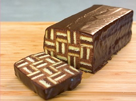

Streifenkuchen
Backzeit: 30min
Zubereitungszeit: 15min + 20 min zusammensetzen falls gewünscht
Unausgefahrenes Backblech oder Faultierform (+5min Backzeit) nutzen.
Optional Schokosplitter in hellen Teig geben oder mit Obst verzieren.

- 250g weiche Butter
- 250g Zucker
- 7 Eier Größe M
- 150g Mehl
- 100g Speisestärke
- 2 EL Backkakao
- 1 EL Milch
- 100g Schokocreme
- Ofen auf 250°C Grill vorheizen
- 250g Butter, 250g Zucker, 7 Eigelb, 150g Mehl und 100g Speisestärke verschischen
- Eiweiß aufschlagen, unterheben
- Teig halbieren, zu einer Hälfte Kakao und Milch geben
- Die Hälfte des hellen Teiges in die Form geben, 5 min backen
- Die Hälfte des dunklen Teiges darauf geben, 5 min backen
- Weiter so verfahren mit dem restlichen Teig
- Ofen auf 150°C Umluft herunterkühlen lassen
- Weitere 5 (mit Faultierform 10) min backen
- Teig nach dem Auskühlen in Streifen schneiden, die so breit wie auch hoch sind
- Streifen mit Schokocreme wie auf dem Bild schichten